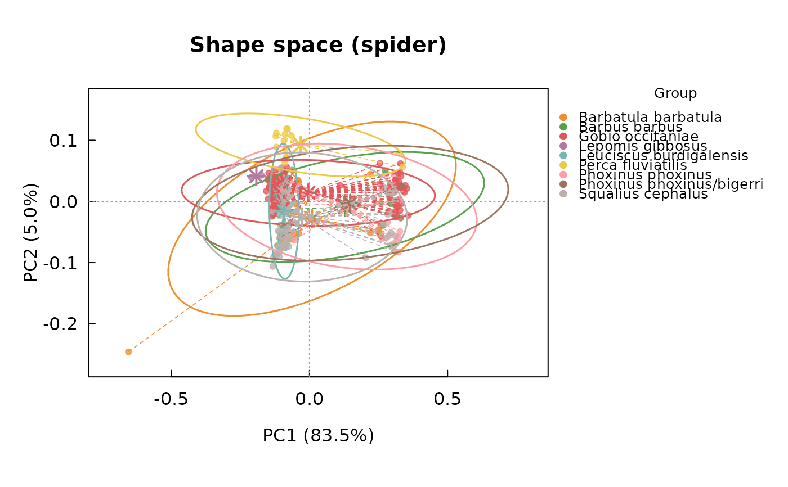

Performs a Principal Component Analysis of Procrustes-aligned shape coordinates to construct a shape space, the standard ordination used to visualise and compare shape variation among specimens, populations or species in geometric morphometrics.
Arguments
- gpa
An object of class
"intrait_gpa", as returned bygpa_fish().- groups
Optional factor (or character vector), one value per specimen in the same order as
dimnames(gpa$coords)[[3]], used to colour/group specimens when plotting. IfNULLandgpa$metadatacontains aspeciescolumn, it is used automatically.- axes
Integer vector of length 2, the principal components to retain for plotting (defaults to
c(1, 2)).- x
An object of class
"intrait_shapespace", as returned byshape_space().- ...
Currently unused.
Value
An object of class "intrait_shapespace", a list with
elements scores (data.frame of PC scores), sdev (standard
deviations of all PCs), var_explained (percent variance explained by
the two selected axes), rotation (PCA loadings), groups, and
axes. Has a dedicated plot() method.
Invisibly returns x.
Examples
# real T-26 Saudrune data (see ?fishmorph_shape_landmarks for why the
# scale bar and incomplete/unidentified specimens are dropped first):
fish <- load_t26_saudrune_landmarks()
fish_shape <- fishmorph_shape_landmarks(fish)
#> fishmorph_shape_landmarks(): dropping 230 specimen(s) with a missing landmark or unresolved species identification.
gpa <- gpa_fish(fish_shape)
#> flag_outliers: 84 specimen(s) flagged as potential Procrustes-distance outlier(s) (threshold = median + 3.0 x MAD): T-26-0011_Operator_2, T-26-0052_Operator_1, T-26-0067_Operator_1, T-26-0067_Operator_2, T-26-0068_Operator_1, T-26-0068_Operator_2, T-26-0070_Operator_1, T-26-0070_Operator_2, T-26-0071_Operator_1, T-26-0071_Operator_2, T-26-0072_Operator_2, T-26-0073_Operator_2, T-26-0074_Operator_1, T-26-0074_Operator_2, T-26-0075_Operator_1, T-26-0075_Operator_2, T-26-0076_Operator_1, T-26-0076_Operator_2, T-26-0077_Operator_2, T-26-0078_Operator_2, T-26-0079_Operator_2, T-26-0080_Operator_1, T-26-0080_Operator_2, T-26-0082_Operator_1, T-26-0082_Operator_2, T-26-0085_Operator_1, T-26-0086_Operator_2, T-26-0090_Operator_2, T-26-0091_Operator_1, T-26-0091_Operator_2, T-26-0094_Operator_1, T-26-0096_Operator_1, T-26-0096_Operator_2, T-26-0097_Operator_1, T-26-0097_Operator_2, T-26-0098_Operator_2, T-26-0099_Operator_2, T-26-0103_Operator_1, T-26-0103_Operator_2, T-26-0104_Operator_2, T-26-0112-2_Operator_1, T-26-0112-2_Operator_2, T-26-0113_Operator_1, T-26-0116_Operator_1, T-26-0120_Operator_1, T-26-0120_Operator_2, T-26-0122_Operator_1, T-26-0128_Operator_1, T-26-0128_Operator_2, T-26-0130_Operator_1, T-26-0130_Operator_2, T-26-0230-1_Operator_2, T-26-0261-3_Operator_1, T-26-0261-5_Operator_1, T-26-0263_Operator_1, T-26-0263_Operator_2, T-26-0264-2_Operator_1, T-26-0264-2_Operator_2, T-26-0264-3_Operator_1, T-26-0264-4_Operator_1, T-26-0264-4_Operator_2, T-26-0265_Operator_1, T-26-0265_Operator_2, T-26-0266_Operator_1, T-26-0266_Operator_2, T-26-0268_Operator_1, T-26-0268_Operator_2, T-26-0269_Operator_1, T-26-0269_Operator_2, T-26-0270-1_Operator_1, T-26-0270-1_Operator_2, T-26-0270-2_Operator_1, T-26-0270-2_Operator_2, T-26-0271_Operator_1, T-26-0271_Operator_2, T-26-0272_Operator_1, T-26-0272_Operator_2, T-26-0273_Operator_1, T-26-0273_Operator_2, T-26-0276_Operator_1, T-26-0276_Operator_2, T-26-0277_Operator_1, T-26-0278-1_Operator_1, T-26-0278-2_Operator_2; this only flags candidates for review (e.g. with plot_landmarks()/plot_fishmorph_points()), nothing was removed automatically. Set remove_outliers = TRUE to exclude them and re-align, or see $outlier_screen for details.
ms <- shape_space(gpa, groups = fish_shape$metadata$species)
ms
#> <intrait_shapespace>
#> Axes PC1/PC2, variance explained: 83.5% / 5.0%
#> 328 specimens, 10 groups
# \donttest{
plot(ms)

# }